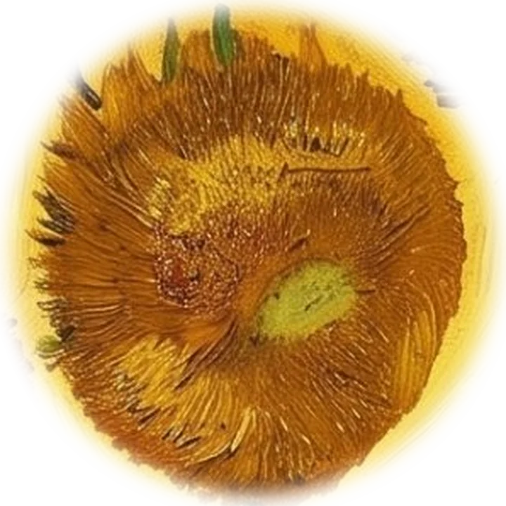

How I build the models
The cycle of life
Van Gogh painted his sunflowers at every stage, from bud to bloom to seed. A model lives the same cycle: it is seeded with data, grown, judged, and eventually replaced by the next one. This is how I take a model through it.
“…one flower that’s gone to seed and lost its petals and a bud…”Vincent van Gogh to Theo, Arles, 21 or 22 August 1888
These six stages are how I build a model, from the first question to the day it is retired. The order matters more than the algorithm: most model failures start in the first two stages, long before anything is trained.
The cycle
Choose a petal to open a stage. Arrow keys move around the flower.
Why I hold data back
Thirty-two noisy points from a smooth curve. Seventy per cent train the model; the rest are kept aside and only ever used to check it. Raise the polynomial degree and watch what happens to each error, then see how cross-validation makes the same choice more steadily.
- Error on training points
- —
- Error on held-out points
- —
- Best degree on held-out points
- —
- Cross-validation’s choice
- —
Training error only ever falls. Held-out error falls, then climbs once the curve starts memorising noise. Lines that leave the top of the chart are cut off; the table has every value.
Draw a few new samples and the best degree moves around: ten held-out points are a small jury. For real decisions I use k-fold cross-validation, which gives every point a turn on the jury.
The points are split into five folds; each fold is held out once while the other four train the model. The band is ± one standard error across the folds.
Principles
A baseline before a model
The average, last year’s value or the most common answer. If a model can’t beat that, it isn’t ready.
No peeking
Data is split before anything else, and every cleaning or scaling step learns from the training part only.
Uncertainty is part of the answer
Confidence and prediction intervals travel with every estimate, so nobody mistakes a guess for a measurement.
Explain it or don’t ship it
Every result comes with what drives it, which assumptions it rests on, and when it should not be used.
The source stays untouched
Changes to data are suggested, logged and reversible. Nothing is deleted or rewritten quietly.
What runs these rooms
Every tool runs in your browser in plain JavaScript, so no data leaves your device. The statistics are checked against SciPy and statsmodels by the site’s test suite, 77 automated checks covering the distributions, descriptive statistics, correlation and regression. Next on the bench is a machine-learning lab running scikit-learn in the browser.
Sources
- Van Gogh to Theo, Arles, 21 or 22 August 1888, letter 666.
- The lab’s points are synthetic: a smooth curve plus random noise, regenerated on request.